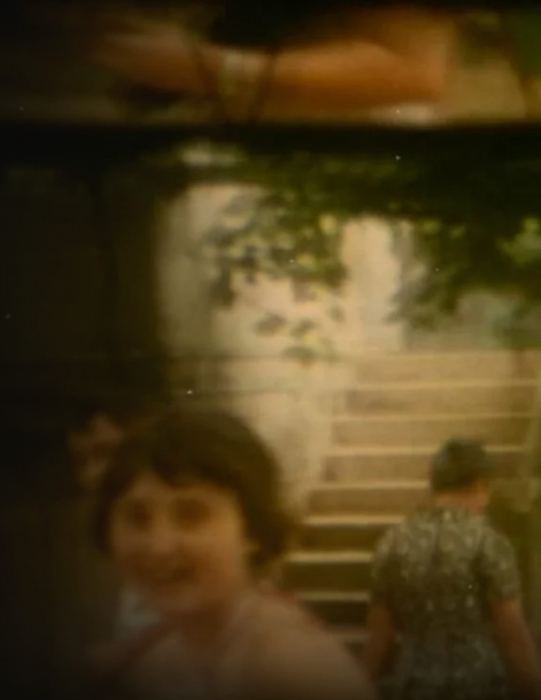
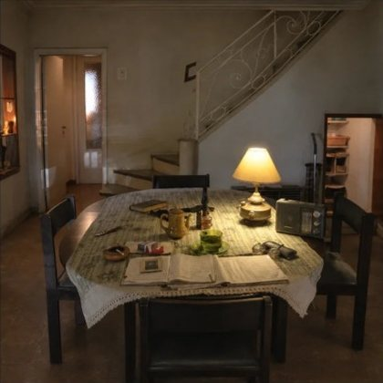
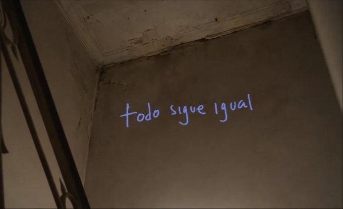
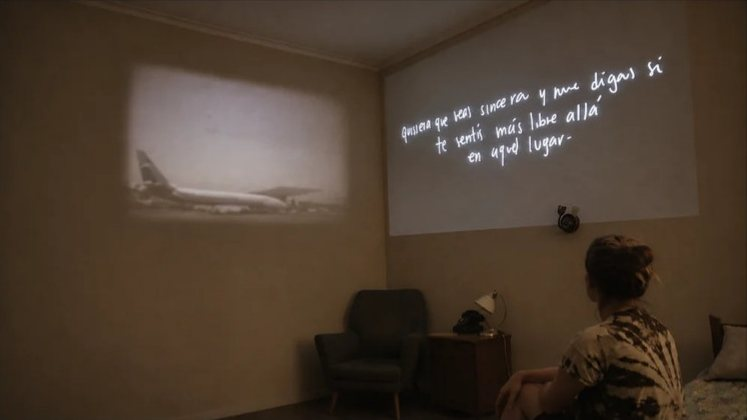
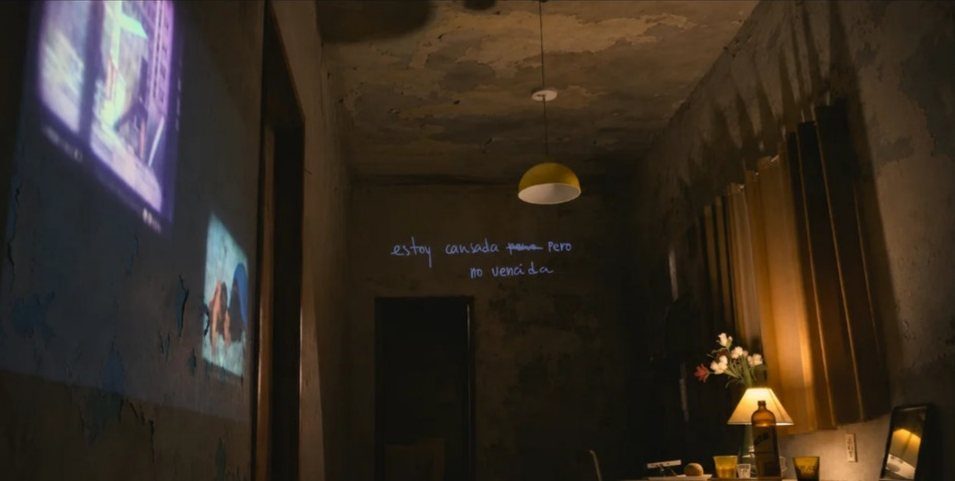
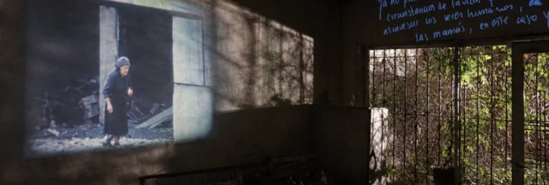
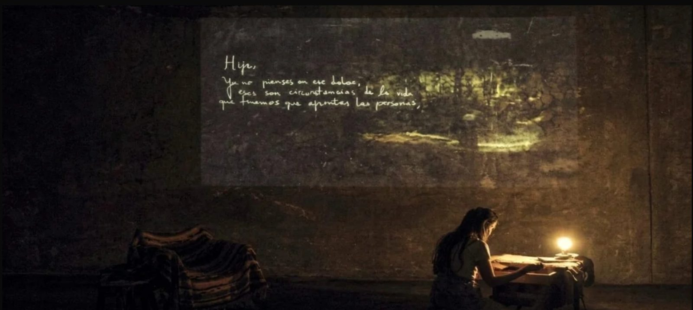
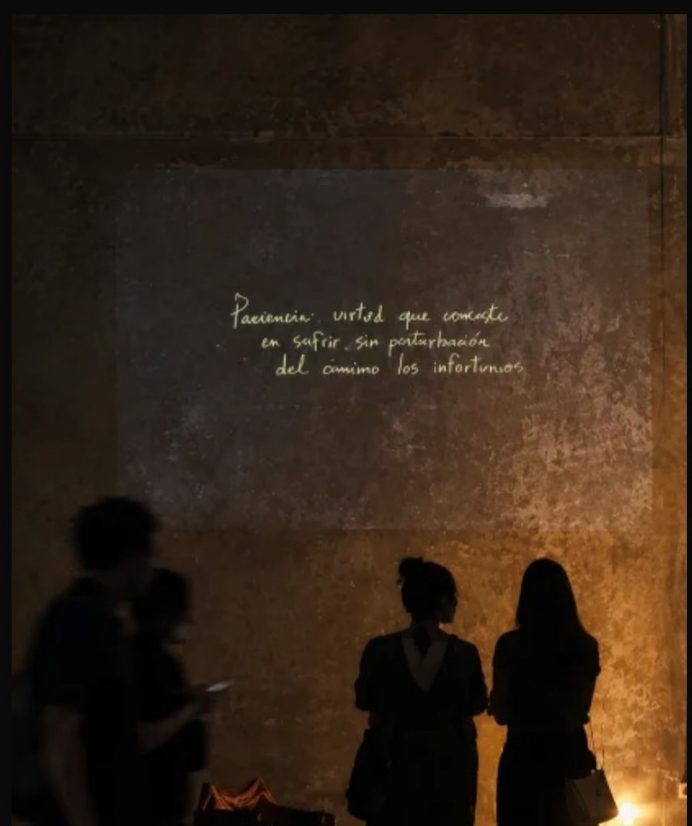

Correspondence of a Mother
Correspondencia de Madre
How to portray absence?
After her daughter leaves home, a woman withdraws from life until she dies. Her story remains in the house: handwritten letters, family photographs and Super 8 films.
The installation turns her absence into a space. Visitors enter as detectives and piece her story together from letters, annotated magazines and everyday objects.
- Project type
- Immersive documentary installation
- Context
- Audiovisual Project 2, FADU-UBA · one academic term
- Presented at
- MAGMA / CheLA, Buenos Aires, 2021
- Team
- Javiera Luna Ceniceros, Micaela Mendez, Dolores Benvenuto, Dana Farfan
- My role
- Co-direction and spatial design · digitisation of the family archive and Super 8 films · curation of the written materials · narrative structure of the journey · walkthrough video

Five rooms, five stages of grief
The numbered route from 01 to 05 can be broken at any point. Visitors return to earlier rooms and engage with what they choose, shaping their own path.

01 Living roomThe journey begins.
02 StaircaseAn interlude of stillness, guided by music and projections.
03 Main bedroomLetters, memories and a reconstructed intimacy.
04 KitchenThe darkest corner of grief.
05 Cluttered roomLight emerges from the wreckage in the final stage.MAGMA, CheLA · 2021
The installation was adapted to a single room and brought with its projections and furniture. Visitors could interact with them.

